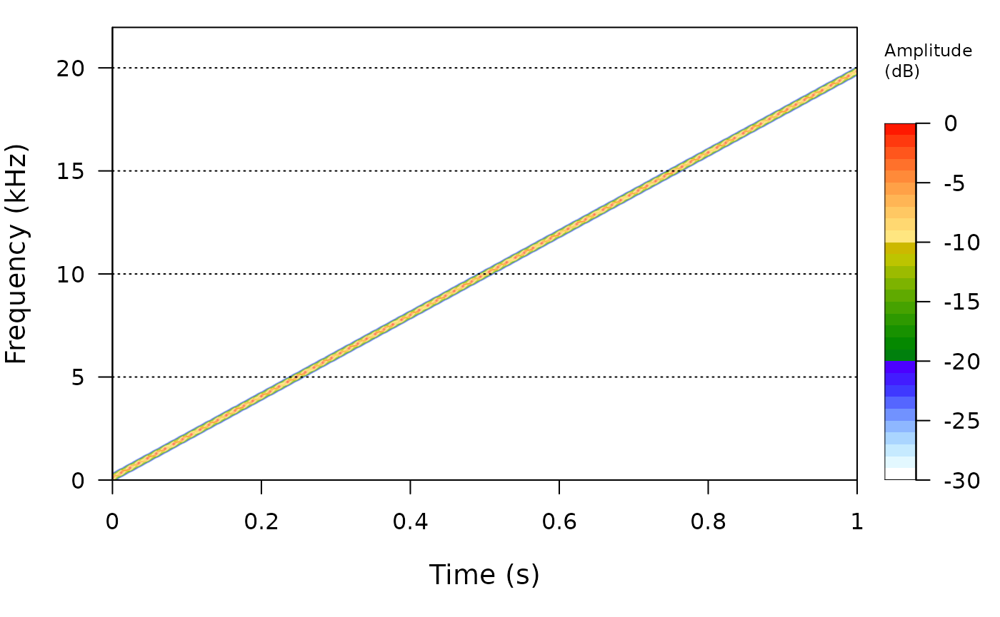
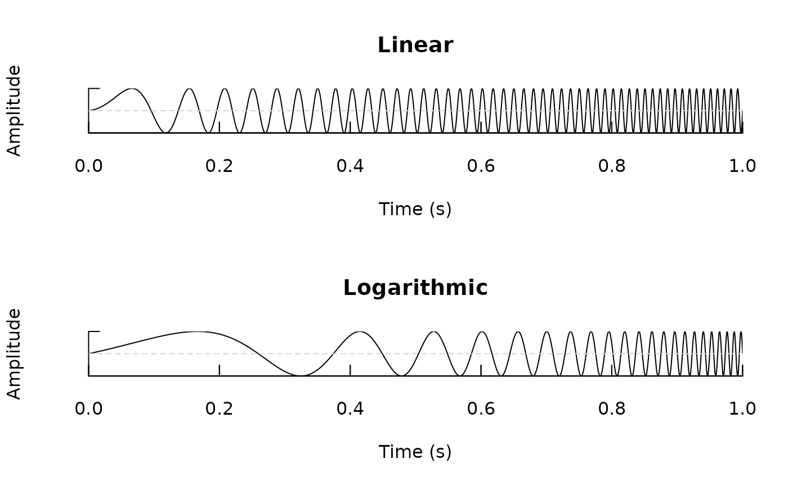

library(sonicscrewdriver)
#>
#> Attaching package: 'sonicscrewdriver'
#> The following object is masked from 'package:base':
#>
#> jitterIntroduction
The sonicscrewdriver package can be used to generate a
variety of acoustic test signals.
Sine sweeps
A sine sweep is a signal that increases in frequency over time. The
sweptsine() function can be used to generate a sine sweep
signal. The following example generates a sine sweep signal that starts
at 20 Hz and ends at 20 kHz.

By default linear sweeps are generated, but it is also possible to
generate logarithmic sweeps by setting the mode argument to
"log".
par(mfrow=c(2,1))
sweep <- sweptsine(1, 100)
seewave::oscillo(sweep, title="Linear")
sweep <- sweptsine(1, 100, mode="log")
seewave::oscillo(sweep, title="Logarithmic")